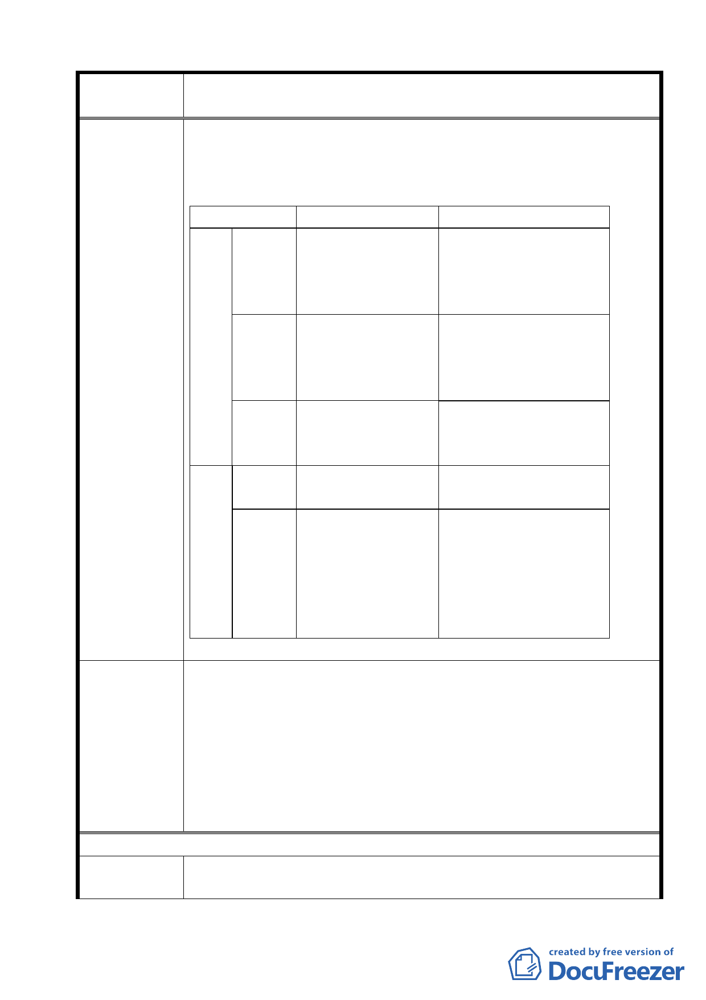

案名
變更臺北市士林區陽明山山仔后地區第二種住宅區為特定住宅區
細部計畫案
築、建蔽率 30％容積率 60％外，其餘地區維持建蔽率 30％、容
積率 30％。
2.有關各使用分區建議分類如下：
使用分區
位置與興建行為
理由
C-1 綠地 房舍遭火災而毀壞區 本區原生樹種眾多，可考
域改為綠地（特別是 慮直接指定為綠地，作為
凱旋路與國泰街中間 原生樹種特色公園。
的區域）
公 共 設 保留聯誼社房舍及其 聯誼社的網球場、游泳池
施用地 相關設施
等設施，可透過指定為公
共用地，將設施開放給市
民與附近學生使用。
特住一 其餘完好的房舍則予 本區接近文大，作為公共
以 保 存 ， 維 持 住 宅 教育設施，可增加大學與
區。
社區交流接觸之機會。
C-2 綠地 長 春 路 旁 的 長 型 綠 此區為美國社區規劃的公
地。
設綠地，應予以保留。
綠地 樹木銀行與旁邊圍牆 停機坪之原址不限樹木銀
內的空地。
行，旁邊圍牆內的荒地早
期為大片平坦草皮作為直
昇機升降之用，應拆除圍
牆，恢復草皮景觀以彰顯
協防的歷史意象。
委員會議
決議
1.有關本項陳情市府業說明依「陽明山美軍宿舍群文化景觀保存
計畫」，對於原美軍宿舍建築群係以「元素保存」為原則，而非
採古蹟或歷史建築「原貌保存」之方式，本案係依該文化景觀
保存計畫相關規範審慎訂定都市設計管制要點。
2.本案除市府本次會議所送修正計畫書第 2-20 頁（四）文字修正
為「建築基地地面高度設計：建築基地地面設計以維持原地形
地面為原則，但經整地後基地地面高度不得超過 1.2 公尺」外，
其餘依市府本次會議所送修正計畫書內容通過。
97/10/14 陳情意見
陳情理由
1.陽明山社區整體環境容受力已達飽合，像是交通服務擁塞，供
水供電吃緊的問題，固然不能透過美軍宿舍群的專案變更做全
40